Next: Complex sinusoids
Up: Time shifts and delays
Previous: Time shifts and delays
Contents
Index
Complex numbers
Complex
numbers are written as:
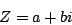
where  and
and  are real numbers and
are real numbers and  . (In this book we'll use
the upper case Roman letters such as
. (In this book we'll use
the upper case Roman letters such as  to denote complex numbers. Real
numbers appear as lower case Roman or Greek letters, except for
integer bounds, usually written as 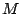 or
to denote complex numbers. Real
numbers appear as lower case Roman or Greek letters, except for
integer bounds, usually written as 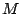 or  .) Since a complex
number has two real components, we use a Cartesian plane (in place of a number
line) to graph it, as shown in Figure 7.1. The quantities and
are called the
real
and
imaginary parts of , written as:
.) Since a complex
number has two real components, we use a Cartesian plane (in place of a number
line) to graph it, as shown in Figure 7.1. The quantities and
are called the
real
and
imaginary parts of , written as:
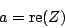
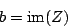
Figure 7.1:
A number, , in the complex plane. The axes are for the real
part and the imaginary part .
| 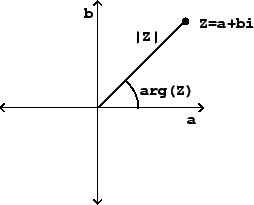 |
If is a complex number, its
magnitude (or absolute value),
written as 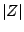, is just the distance in the plane from the origin to the
point 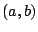:
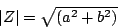
and its
argument,
written as 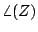,
is the angle from the positive axis to the point :
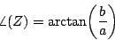
If we know the magnitude and argument of a complex number (call them  and
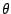) we can reconstruct the real and imaginary parts:
and
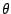) we can reconstruct the real and imaginary parts:
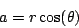
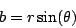
A complex number may be written in terms of its real and imaginary parts
and , as  (this is called
rectangular form), or alternatively in
polar form,
in terms of and :
(this is called
rectangular form), or alternatively in
polar form,
in terms of and :
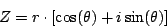
The rectangular and polar formulations are interchangeable; the equations
above show how to compute and from and and vice versa.
The main reason we use complex numbers in electronic music is because they
magically automate trigonometric calculations. We frequently have to add
angles together in order to talk about the changing phase of an audio signal as
time progresses (or as it is shifted in time, as in this chapter). It turns
out that, if you multiply two complex numbers, the argument of the product is
the sum of the arguments of the two factors. To see how this happens, we'll
multiply two numbers 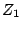 and 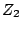, written in polar form:
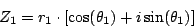
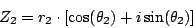
giving:
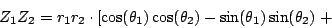
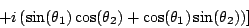
Here the minus sign in front of the
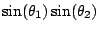 term
comes from multiplying  by itself, which gives
by itself, which gives  . We can spot the
cosine and sine summation formulas in the above expression, and so it simplifies
to:
. We can spot the
cosine and sine summation formulas in the above expression, and so it simplifies
to:
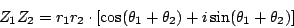
By inspection, it follows that the product 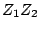
has magnitude
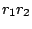 and argument
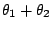.
We can use this property of complex numbers to add and subtract angles (by
multiplying and dividing complex numbers with the appropriate arguments) and
then to take the cosine and sine of the result by extracting the real and
imaginary parts.
Subsections
Next: Complex sinusoids
Up: Time shifts and delays
Previous: Time shifts and delays
Contents
Index
Miller Puckette
2006-12-30